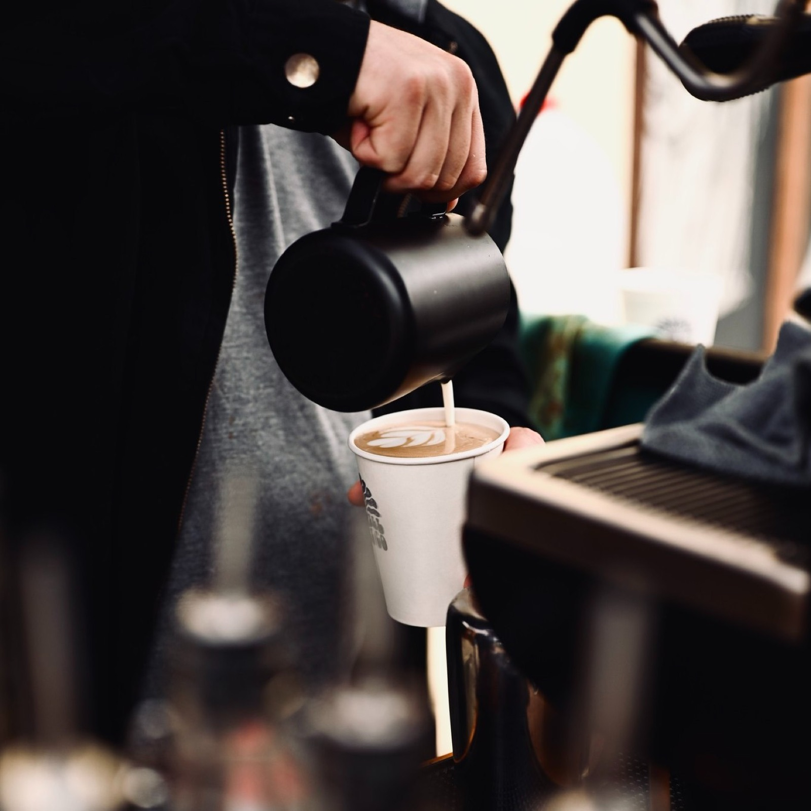
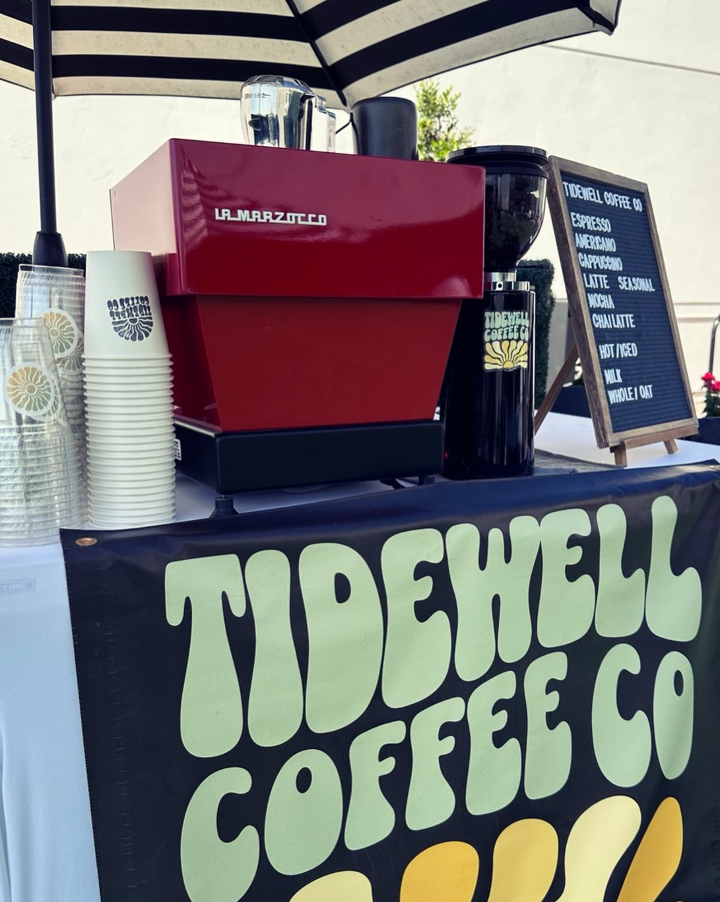
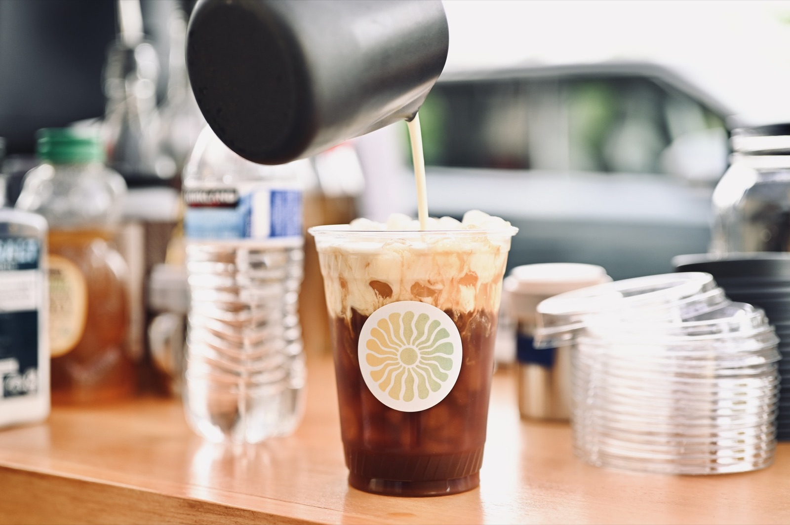
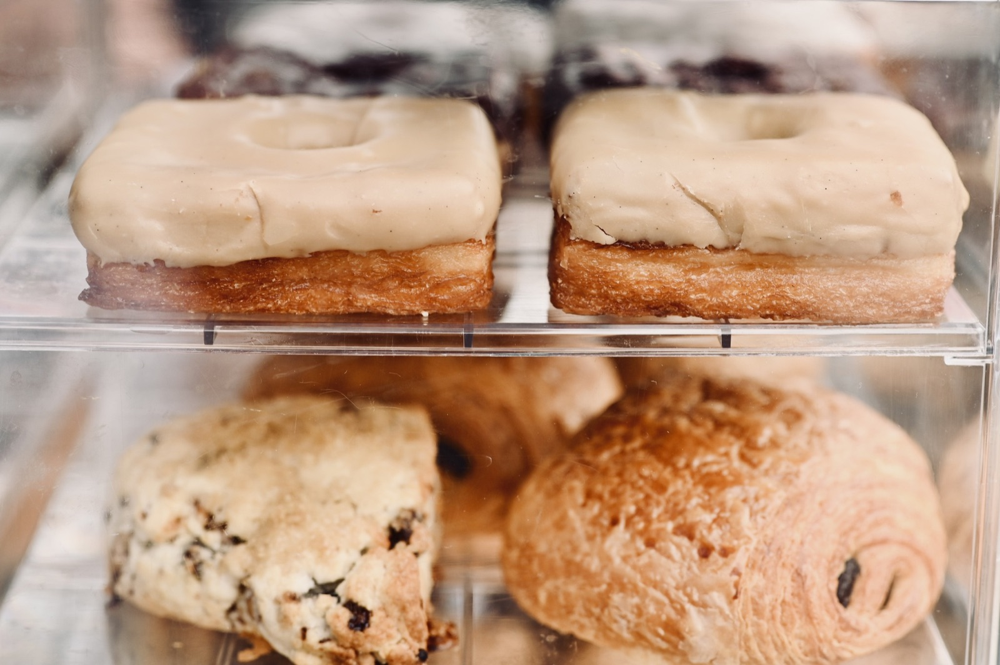

Espresso bar
Espresso, cortados, flat whites and lattes, pulled on the machine on the cart.

At The Sanctuary by The Lost Abbey
The original Tidewell cart, parked in San Elijo Hills and pouring to order.
Walk up and order at the cart. Bags of all four coffees are on the counter to take home.
Everything is made to order, right in front of you.

Espresso, cortados, flat whites and lattes, pulled on the machine on the cart.

Honey cinnamon, sea salt maple, lavender and more, hot or over ice.

First flush matcha, coastal lemonades, chai and London fog.

A case of scones, muffins and crumb cake to go with your cup.
Our second home is on the bar at Bodega Market in Oceanside, with juice and sandwiches alongside.
Get in touch